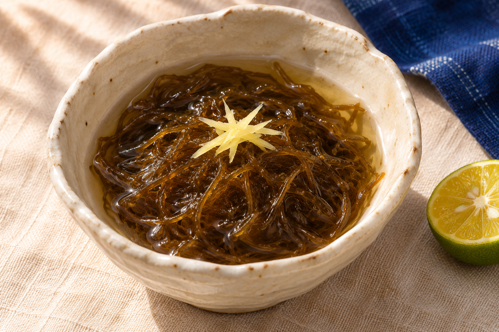

この海と、出会ったころ。
始めたきっかけや、宜野座との関わりを聞く。
取材予定のテーマ海と、人と、もずく。
BRAND CONCEPT / メッセージ案
GINOZA, OKINAWA
CULTURE & FOOD
EDITOR'S NOTE
もずくから、見えるもの。
ひと口の食感から、
その向こうにある海へ。
ひと袋のもずくから、
それを届ける人へ。
ただ商品を並べるだけではなく、
もずくにまつわる仕事や、
日々の食卓を伝えていく。
崎浜モズクの、新しい入り口です。
PEOPLE & PLACE
つくり手を知るここに、つくり手の顔を。
実際の顔写真・掲載許可を確認して掲載します。海のそばで、働く人。
どんな人がもずくに向き合い、
何を大切にしているのか。
ご本人の言葉から、伝えていきます。
顔写真・氏名・仕事・経歴・言葉は、実際の取材と掲載許可をもとに確定します。
始めたきっかけや、宜野座との関わりを聞く。
取材予定のテーマ実際に担う仕事と、一年の流れを聞く。
取材予定のテーマご本人ならではの食べ方や、食卓の話を聞く。
取材予定のテーマAT THE TABLE
さっぱりと、あたたかく、香ばしく。
ひとつの食材に、いくつもの楽しみ方。
塩抜きしたもずくに、お好みの三杯酢と薬味を。
卵やねぎを添えて、あたたかい一杯に。
塩抜き後、水気をしっかり切って。油はねにご注意ください。
具体的な塩抜き・保存方法は、商品ラベルや販売者の案内に従ってください。

OUR MOZUKU
沖縄県宜野座産・塩もずくしっかりとした食感を、
使う量に合わせて３つの容量で。

まずは少量から
いつもの食卓に
たっぷり使う方へ
価格・在庫・送料は確認中です。容量の選択は注文や予約の送信にはなりません。
LET'S TALK
気になることを聞いて、
条件を確認してから、ご注文へ。
現在、受付準備中です。
ご注文・お支払いはできません。
相談メッセージの準備
塩もずくについて、価格・送料・在庫を教えてください。
希望容量：○○g／kg
希望数量：○袋
お届け先地域：○○県
LINE公式URL・連絡先・受付時間は確認中です。
このHPには入力フォームがなく、注文情報を保存しません。
販売条件・個人情報の取扱いを確認する ↗INFORMATION / DRAFT
販売情報・食品表示・個人情報の取扱いは下書きです。未確定の条件を確認してから受付を開始します。
LINEで受け付ける通信販売の条件を、注文前に確認できるようにするための整理です。ブランド名と、法的な販売事業者名は区別します。
サイトの説明と実際の商品ラベルを照合します。正式表示では、食品表示基準に応じた名称、原材料、原産地、期限、保存方法などを確定してください。
以下は運用方針を確定するための草案です。正式な事業者名、問い合わせ先、実際のLINE運用、配送・決済手段を反映してから掲載します。
このHPには注文フォームや会員登録機能がなく、注文内容・氏名・住所などを入力、保存する機能はありません。容量選択はページ内の表示だけを変更し、再読み込み時にリセットされます。相談文コピーは、利用者の操作で端末のクリップボードへ文章をコピーするだけで、注文を送信しません。
独自のアクセス解析、広告タグ、Cookie、ローカルストレージは実装していません。ホスティングサービス側の認証・アクセスログ等は別途、提供サービスの運用・規約に従います。
運用確認中受付開始後、問い合わせ・注文のために、LINEの表示名、メッセージ内容、購入希望商品・数量、お名前、連絡先、配送先、注文履歴など、必要な範囲の情報を取り扱う想定です。実際に取得する項目を確定し、不要な情報は求めません。
このHPにLINEログイン連携はありません。LINE公式へ移動した後の情報の取扱いには、販売事業者の方針とLINE側の規約・プライバシーポリシーが関わります。公式アカウントの運営主体とリンク先を公開前に確認します。
運用確認中問い合わせへの回答、見積り・注文内容の確認、代金の確認、商品発送、配送トラブル対応、返品・返金・必要なアフター対応のために利用する想定です。販促メッセージの配信を行うかどうかは別途確認し、注文対応とは区別して案内します。
運用確認中配送業者・決済事業者等へ提供する情報、委託先名、目的、範囲を確定します。LINE公式アカウントの管理権限を持つ人・組織も確認し、不要な共有をしない運用を定めます。
運用確認中注文情報の保管場所、保管期間、担当者のアクセス権限、端末管理、削除方法、法令上の保存が必要な情報の取扱いを定めます。LINEのトークや配送用データを誰が扱うかも明確にします。
連絡先確認中個人情報に関する相談先として、販売事業者名、連絡先、受付時間、本人確認の方法を掲載します。請求に対応できる範囲や、法令による保存義務なども確認します。
確認中制定日・改定日、変更時の案内方法を確定します。運用と異なる方針をそのまま公開しないように見直します。